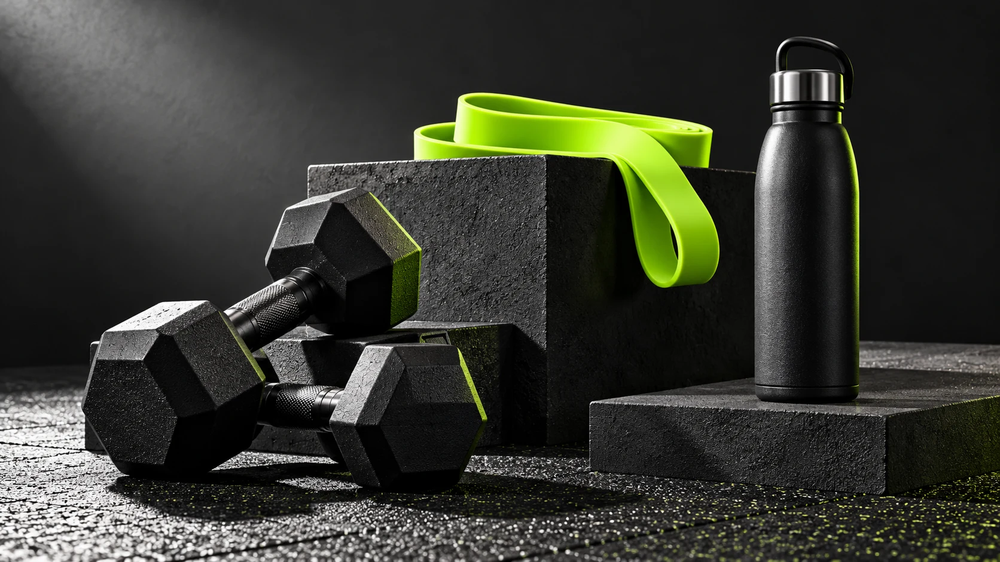

Make a little space for movement
A home setup starts with usable floor space, equipment suited to your intended activities and a storage spot that keeps the area clear.
Read the notes ↗A home setup starts with usable floor space, equipment suited to your intended activities and a storage spot that keeps the area clear.
Read the notes ↗An interval timer helps you keep track of time. Choose your own work and rest durations and pause whenever you need to. The tool does not choose exercises or intensity for you.
Read the notes ↗Product labels and resistance levels are not interchangeable across suppliers. Review the actual item’s weight, resistance specification and instructions before choosing it.
Read the notes ↗
A home setup starts with usable floor space, equipment suited to your intended activities and a storage spot that keeps the area clear.
An interval timer helps you keep track of time. Choose your own work and rest durations and pause whenever you need to. The tool does not choose exercises or intensity for you.
Product labels and resistance levels are not interchangeable across suppliers. Review the actual item’s weight, resistance specification and instructions before choosing it.
Original editorial notes for this showcase. Product-specific information must be verified with the live supplier.